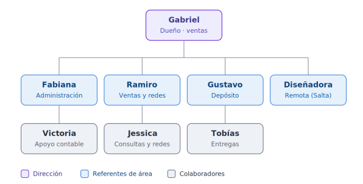
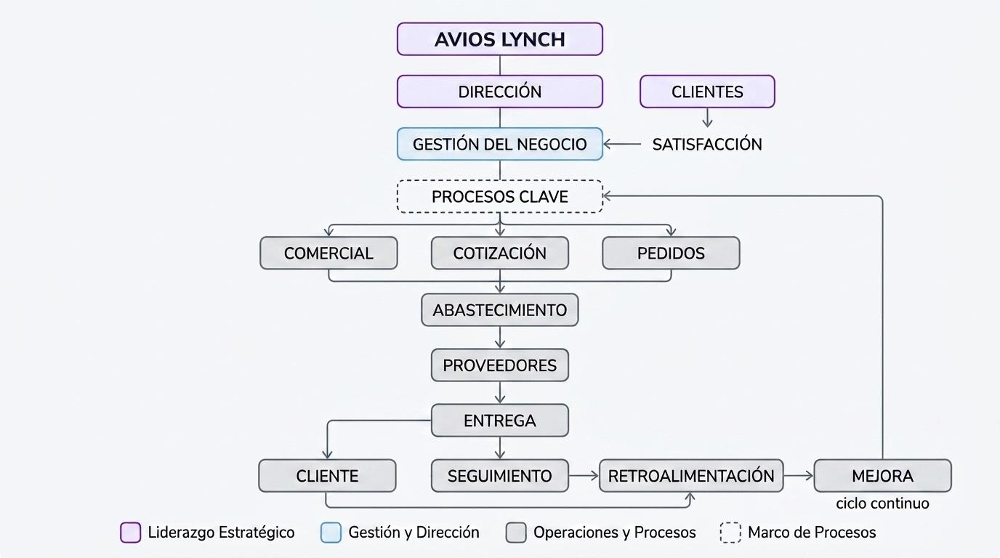

Presentación del equipo
Miembros del equipo de SAKU IT Advisory & Consulting
Nombre | Rol |
|---|---|
Abel | Project Manager / PMO |
Daniela | Profesional de Ciberseguridad y Auditoría |
Florencia | Product Manager Digital |
Jennifer | Desarrollador / DevOps |
Mariano | Funcional / Implementador |
Tomás | Profesional de Datos |
Project sponsor
- Nombre y apellido: Ramiro Ivan Scheinaizen
- Cargo: Representante de ventas / Sponsor
- Correo electrónico: Contacto por Whatsapp +54 9 5097-1893 (teléfono particular)
Perfil de la organización
Presentación del caso
AviosLynch es una pyme argentina dedicada a la fabricación y comercialización de avíos personalizados para la industria textil, es decir, todos los insumos de una prenda que no son la tela: etiquetas personalizadas (su producto principal), packaging, elásticos y servicios de producción. El único segmento que no cubre es el de los avíos metálicos (botones, tachas, hebillas), dominado por dos o tres fabricantes que venden en forma directa. Opera bajo un modelo B2B: sus clientes son fabricantes textiles, talleres de producto terminado que confeccionan para marcas de indumentaria y emprendedores que realizan pedidos desde las 100 unidades. La empresa no fabrica en ningún momento, sino que terceriza la producción en una red de proveedores (actualmente trabaja con unos ocho activos), funcionando como proveedor integral del fabricante.
Lleva aproximadamente 15 años de actividad, lo que dentro del rubro la posiciona como un actor relativamente nuevo frente a competidores con décadas en el mercado. Su estructura es reducida: siete personas activas —el dueño, dos administrativas, dos personas de depósito y logística, y dos vendedores— más una diseñadora que trabaja de manera remota desde Salta.
Su presencia de mercado es nacional: opera desde una oficina y depósito propios y llega a todo el país mediante envíos. Recibe además pedidos ocasionales desde Uruguay; la internacionalización formal fue evaluada y descartada por las trabas existentes y su baja rentabilidad. En cuanto a su posicionamiento, la empresa se diferencia por ofrecer una solución integral en un rubro donde la mayoría de los competidores se especializa en un área puntual, por sus precios competitivos y por el vínculo cercano con sus clientes. Fue precursora en el uso de redes sociales como canal comercial —una práctica inexistente en el rubro— y hoy se considera un referente en ese terreno, manejando un volumen de operaciones alto en relación con el tamaño de su estructura.
Identidad organizacional
Misión
La misión de Avios Lynch puede definirse como brindar una solución integral de avíos y servicios a fabricantes y emprendimientos de la industria textil.
Visión
La visión de Avios Lynch se encuentra orientada al crecimiento y consolidación de la empresa como proveedor integral dentro del sector textil a nivel nacional, ampliando tanto su cartera de clientes como los servicios ofrecidos a los clientes actuales.
Valores y principios
- Orientación al cliente: busca mantener un vínculo cercano y personalizado con los clientes.
- Cercanía: el reducido tamaño de la organización es considerado una ventaja para establecer relaciones directas con los clientes.
- Proactividad comercial: existe una búsqueda constante de nuevos clientes y de oportunidades para ampliar los servicios ofrecidos a los clientes actuales.
- Flexibilidad: la organización adapta su operatoria a las necesidades particulares de cada cliente.
- Orientación al crecimiento: existe una intención explícita de ampliar la cartera de clientes, generar referencias y aumentar progresivamente la estructura de la empresa.
- Integralidad: se busca resolver múltiples necesidades del fabricante textil mediante una única propuesta de servicios.
Estructura y presencia
Estructura jerárquica y organigrama (AviosLynch): con presencia a nivel nacional y Uruguay (el intermediario está en Argentina).
En el relación a lo que nos dijo el Sponsor en la entrevista, estas son las personas que intervienen en la operatoria del día a día:
• Gabriel (dueño/fundador): Cabeza de la organización; ventas a clientes grandes por referencias, relación y pagos a proveedores, flujo de caja. No utiliza computadora ni tecnología.
• Fabiana (cofundadora, administrativa): Columna vertebral administrativa: gestión de pedidos, control/filtro de errores, pagos y flujo de caja junto a Gabriel.
• Victoria (administrativa): Apoyo en cuentas corrientes, clientes, proveedores y contabilidad.
• Gustavo (líder de depósito): Recepción y control de mercadería vs. pedido, organización de entregas diarias y recepción de clientes en oficina.
• Tobías (depósito): Soporte operativo y realización de entregas.
• Ramiro (comercial): Redes sociales, prospección activa, clientes propios y seguimiento.
• Jessica (comercial): Atención de consultas entrantes por redes y soporte en seguimiento de prospectos.
• Diseñadora (remota, Salta): Desarrollo de bocetos digitales y diseños técnicos para aprobación del cliente.
• Liderazgo y cultura: Informal y centralizada en el dueño, sin reuniones formales ni métricas (solo facturación y pedidos vs. mes anterior). Ramiro decide sobre la gestión interna comercial; los desembolsos importantes y la imagen de marca requieren aprobación de Gabriel.
• Cambio organizacional: Post-Pandemia incorporaron redes sociales (pioneros en el rubro). La apertura de importaciones redujo la fabricación nacional y achicó el mercado.
Si bien no cuentan con un organigrama formalizado, sería la estructura de la siguiente manera.

Productos, servicios, clientes y proveedores
La organización comercializa avíos (etiquetas personalizadas) a clientes con un modelo B2B:
- Fabricantes textiles
- Talleres para marca de indumentaria.
- Emprendedores
Asimismo, se dividen en clientes estables, cuya ventas las procesa Gabriel; y los clientes de redes sociales, que lo gestiona el equipo de Ramiro.
Las redes sociales que los clientes usan son: whatsapp e Instagram.
Entre los productos que comercializa se destacan los siguientes:
- Etiquetas: bordadas (alta definición- triple densidad), satén, microfibra, algodón, doblado (extremo - al medio), composición, grifa, cartón colgante, elástico y plastisol.
- Packaging.
- Botones.
El flujo de trabajo, según lo indicado por el sponsor, sería algo así.

1. Contacto y pedido: El cliente (o el diseñador de la marca) envía el diseño o la idea por redes/WhatsApp o venta presencial.
2. Diseño y bocetado: Se transfieren los requerimientos a la diseñadora remota, que elabora el boceto digital.
3. Aprobación del cliente: El cliente confirma el boceto (con modificaciones si las hay) por canal digital.
4. Ingreso a producción: Administración envía por mail el pedido confirmado a producción; los plazos (~30 días por cola de producción) se informan al cliente según lo que Gabriel releva con cada proveedor.
5. Recepción y control: La mercadería llega al depósito lindero; Gustavo coteja calidad y cantidades contra el pedido.
6. Entrega final: Despacho o entrega al cliente. Ante fallas de fábrica se ofrece la producción con una atención económica o se reingresa el pedido; si el error es de la diseñadora propia, Avios Lynch se hace cargo.
Servicios:
- Atención personalizada al cliente
- Manejo de consultas, recomendaciones y/o reclamos.
- Solicitud de pedidos de clientes y confección de presupuesto a medida.
- Entrega / distribución de productos.
- Realización del seguimiento de los productos y/o pedidos.
Proveedores:
Avios Lynch cuenta con distinto tipo de materiales para la producción de avíos (productos) y cada proveedor con su propia estructura que nos abastece ese material.
En cuanto a la gestión, Gabriel es el que tiene comunicación con los proveedores e informa en cuánto tiempo está el pedido de cada proveedor.
Los proveedores son locales.
La información se guarda en una carpeta por cada cliente y dentro de cada cliente guardamos el diseño que consta de: “la medida, la fecha, el proveedor, todo.”
Contexto estratégico
Objetivos estratégicos
Objetivo estratégico | Indicador | Meta | Plazo |
|---|---|---|---|
Resolver la saturación en la atención de consultas entrantes por WhatsApp e Instagram, evitando la pérdida de clientes por demoras en la respuesta mediante la automatización/tecnología en la respuesta inicial y filtrado. | Tiempo de respuesta inicial a consultas entrantes en canales digitales. | Lograr la atención y filtrado y respuesta inmediata del 100% de las consultas entrantes por redes sociales y WhatsApp, previa a la gestión con personal. | Plazo estipulado de 3 a 6 meses. |
Profesionalizar la estructura operativa y comercial de la empresa mediante la estandarización de procesos e incorporación de tecnología de gestión | Grado de adopción de herramientas tecnológicas en sustitución de registros manuales/físicos en papel. | Reemplazar el registro administrativo en papel y las planillas descentralizadas por un sistema o plataforma centralizada para la gestión de pedidos y seguimiento de prospectos. Estandarizar procesos y asignarles métricas para gestión. | Plazo estipulado de 6 a 12 meses. |
Posicionarse como proveedores integrales referentes en el sector textil a nivel nacional. | Cantidad de pedidos procesados y volumen de facturación mensual. | Incrementar la cantidad de pedidos acumulados y la facturación mensual bruta respecto a los períodos anteriores (únicas métricas actualmente evaluadas por la dirección). Adoptar nuevas (métricas KPIs) y plasmarlas a un tablero de control. | Plazo estipulado de 12 a 24 meses.. |
Adquisición de nuevos clientes: mejorar rotundamente el seguimiento, establecer un PLAN para lograr llegar a nuevos leads y tener reuniones presenciales. | Llegada a nuevos clientes, cantidad de potenciales nuevos clientes. Satisfacción. | Lograr tener una base de clientes más amplia con impacto en ventas (KPI de clientes y ventas tanto potenciales, actuales, perdidas y concretadas). | Plazo estipulado de 6 a 12 meses. |
Mejorar la comunicación del área comercial con el área administrativa. | Datos compartidos, KPIs para toma de decisiones. | Tener una mejoría en el flujo de trabajo y en los datos. | Plazo estipulado de 6 a 12 meses. |
Contexto competitivo y modelos de negocio del sector
El sector de avíos textiles opera principalmente bajo un modelo B2B, orientado a fabricantes de indumentaria, talleres que producen para distintas marcas y emprendimientos textiles. Los productos suelen elaborarse de manera personalizada y bajo pedido, generalmente en volúmenes importantes. Por este motivo, la propuesta de valor no se limita únicamente a la venta del avío físico, sino que también puede incluir asesoramiento sobre materiales, desarrollo del diseño y coordinación de la producción.
El precio constituye uno de los principales factores en la decisión de compra. Si bien también influyen aspectos como la calidad, los plazos de producción, la capacidad de personalización y la confianza construida con el proveedor, contar con un precio competitivo suele ser la puerta de entrada para nuevos clientes. Una vez establecida la relación comercial, la calidad del producto y el cumplimiento adquieren mayor relevancia para lograr su fidelización.
Los principales competidores son empresas con varios años de trayectoria en el mercado. La entrada de nuevos participantes no suele ser frecuente, ya que para acceder a costos competitivos es necesario trabajar con volúmenes de compra y producción elevados. Además, el rubro se caracteriza por mantener una alta fidelización de clientes una vez establecidas las relaciones comerciales a menos que experimenten variaciones de precios elevadas o problemas severos en el servicio. En este contexto, los competidores buscan diferenciarse principalmente mediante precios competitivos, calidad, cumplimiento de los plazos, variedad de productos y capacidad de adaptación a los requerimientos particulares de cada cliente.
También existen competidores indirectos y productos sustitutos. Uno de ellos es la impresión DTF, que permite estampar determinada información directamente sobre la prenda y puede reemplazar algunos tipos de etiquetas. Sin embargo, no necesariamente ofrece el mismo acabado, presentación o valor asociado a la identidad de marca que puede proporcionar un avío físico. Otro factor que actúa indirectamente sobre el sector es la importación de prendas terminadas desde China, ya que estas pueden ingresar al país con sus avíos incorporados y reducir la necesidad de adquirirlos a proveedores locales.
Respecto a la apertura de las importaciones, esta constituye uno de los principales cambios que afectan al sector en la actualidad. Algunas empresas que anteriormente fabricaban o tercerizan su producción comenzaron a importar prendas terminadas, las cuales suelen ingresar al país con sus avíos ya incorporados generando una mayor competitividad dentro del mercado.
Diagnóstico
Problemática actual y oportunidades
Problemática actual y oportunidades
La situación que dio origen a este trabajo la planteó el propio sponsor durante el relevamiento. Avios Lynch creció comercialmente, pero su estructura interna no acompañó ese crecimiento: la empresa funciona de manera informal, sin procesos definidos, sin métricas ni reuniones de seguimiento, y con una base tecnológica que el mismo sponsor describió como obsoleta. Hoy el único indicador de gestión es comparar la facturación y la cantidad de pedidos contra el mes anterior. La operación diaria se apoya en herramientas mínimas: WhatsApp como canal principal de venta, planillas de Excel en Google Drive, registros administrativos y contables en papel y sin respaldo, un CRM que se dejó de usar porque no se adapta a la operatoria, y una landing page que solo redirige a un catálogo armado en Canva. A esto se suma que no existen medidas de ciberseguridad y que buena parte del negocio depende del dueño, que concentra la relación con los proveedores y gran parte de las ventas, pero no utiliza tecnología.
El problema más concreto y urgente es el cuello de botella comercial: dos personas absorben toda la demanda de consultas que llega por redes sociales y WhatsApp, y reconocen que no logran responder. Se caen dos frentes a la vez: la atención de consultas entrantes y el seguimiento de clientes potenciales, que existe en un Excel pero se explota poco por falta de organización y de tiempo. La consecuencia es doble: ventas que se pierden y daño reputacional, porque el cliente que no recibe respuesta percibe un mal servicio y, según el sponsor, "no te vuelve a escribir" e incluso lo comenta a terceros.
La oportunidad que se está desaprovechando es justamente la demanda que la empresa ya tiene y no logra capturar. Cada consulta sin responder es una venta menos en un mercado donde los clientes rara vez cambian de proveedor una vez fidelizados, lo que hace que cada captación valga más que en otros rubros. Hay además una ventaja al alcance de la mano: según el sponsor, ningún competidor utiliza plataformas de seguimiento comercial, de modo que ordenar la gestión de prospectos pondría a Avios Lynch un paso adelante. En cuanto al producto, el sponsor identificó la posibilidad de incorporar algún avío importado que no pueda fabricarse en el país, como diferencial frente a la competencia.
Es el momento de intervenir por tres razones:
1. El contexto: la apertura de importaciones redujo la fabricación nacional y achicó el mercado, con lo cual mejorar la eficiencia comercial y diferenciarse ya no es algo deseable sino necesario para sostenerse; el propio sponsor señaló que hay que aprovechar la oportunidad ahora, porque las reglas del juego pueden cambiar de un día para el otro.
2. El problema ya genera pérdidas medibles hoy, en ventas y en reputación.
3. Las condiciones internas son favorables: el sponsor tiene autonomía para aplicar mejoras de gestión sin mayores trabas, hay predisposición a incorporar tecnología (de hecho, ya venían evaluando usar inteligencia artificial para filtrar consultas) y, partiendo de una base tan precaria, cualquier propuesta bien orientada tiene chances reales de implementarse y de que su impacto se vea.
Diferencias de percepción entre el sponsor y el equipo.
- El sponsor considera que un plan de contingencia "no sería tan relevante hoy" y que bastaría con resguardar los datos en una nube; el equipo, en cambio, evalúa la ausencia de backups como un riesgo crítico, dado que la administración y la contabilidad se registran exclusivamente en papel y la pérdida de esos soportes sería irrecuperable.
- El sponsor descartó la aplicabilidad de acuerdos de nivel de servicio (SLA); el equipo lo relevó como una carencia a considerar a futuro.
- El sponsor atribuye la desatención de consultas a un problema de demanda y no de calidad de servicio; el equipo observa que, más allá de la causa, el efecto sobre la percepción del cliente es el mismo y constituye un problema de servicio en sí.
- Respecto del CRM abandonado, el sponsor lo explica por limitaciones de la herramienta y preferencia por la interfaz de WhatsApp; el equipo interpreta que la falta de procesos y criterios de seguimiento previos también contribuyó a que la herramienta no prosperará.
- Ante la sugerencia del equipo de crear un canal de coordinación que dé visibilidad de las consultas caídas al resto de la organización, el sponsor considera que involucrar al dueño y a la administración sería "una obstrucción", dada la simplicidad del trabajo y el desinterés del dueño por la tecnología; el equipo lo registra como una restricción de diseño a contemplar en las propuestas.
Diagnóstico de madurez organizacional
Para evaluar la madurez organizacional de Avios Lynch se utiliza como referencia el modelo CMM (Capability Maturity Model).
A partir del relevamiento realizado, se detecta que la capacidad de la organización para sostener y escalar sus operaciones depende actualmente en buena medida del conocimiento de sus integrantes y de la comunicación informal entre ellos.
El equipo considera que la madurez organizacional predominante de Avios Lynch corresponde al Nivel 1 (Inicial). Las características que denotan la etapa inicial de madurez son:
- Los procesos no se encuentran formalmente documentados ni estandarizados.
- La operatoria depende en gran medida del conocimiento y experiencia de las personas que desempeñan cada función.
- La información se encuentra distribuida entre distintos medios, como WhatsApp, Google Drive, planillas de Excel, correo electrónico y registros físicos.
- No existe un conjunto formal de indicadores que permita monitorear el desempeño de los procesos. Actualmente, la gestión se concentra principalmente en la comparación de facturación y cantidad de pedidos entre períodos.
- No existe una planificación formal con objetivos, metas y mecanismos sistemáticos de seguimiento.
- La atención comercial depende principalmente de dos personas, generando un cuello de botella frente al volumen de consultas recibidas.
- El seguimiento de prospectos no se encuentra integrado a un proceso comercial formal y sistemático.
- No existen mecanismos formalizados de gestión de contingencias y recuperación de la información.
- La utilización de tecnología se encuentra orientada principalmente a resolver necesidades puntuales, sin una estrategia integral de gestión de la información y los procesos.
Cultura, liderazgo y capacidades
AviosLynch es una organización con una cultura colaborativa a través de canales informales de comunicación y redes sociales. Tiene un estilo de liderazgo de bajo costo, ya que se centran en el precio y no tanto en la calidad.. En cuanto a sus valores se vislumbra que es una organización orientada al cliente pero preocupada por sus procesos internos.
Fortalezas:
- Presencia pionera en entorno digital y redes sociales respecto al rubro.
- Servicio integral de avíos (ahorro de tiempos para el fabricante).
- Agilidad en la atención directa y relacionamiento cercano con clientes.
Limitaciones:
- Ausencia total de procesos estandarizados, métricas e indicadores (KPIs).
- Dependencia de registro físico en papel y planillas aisladas.
- Cuellos de botella en la atención de chats de WhatsApp, perdiendo prospección/seguimiento por falta de tiempo.
Cultura organizacional : En esta organización su cultura por más que sea colaborativa para lograr ventas y obtener resultados, los canales de comunicación que utilizan muchas veces dificultan la trazabilidad de las operaciones y registros que se llevan a cabo. Si tuvieran que migrar hacia un sistema centralizado, habría primero que rastrear el camino real de las operaciones y su trazabilidad , para luego efectuar la transformación. Por lo que el cambio debería ser a través de un proceso gradual, ya que no estás habituados a transformarse.
Requerimientos iniciales
Historias de usuario
Releven las principales necesidades del sponsor y las áreas clave de la organización en formato de historias de usuario.
Us-01 us-02
Como | Jefe de ventas / Sponsor | Como | Jefe de ventas / Sponsor | |
|---|---|---|---|---|
quiero | atender a la demanda entrante de whatapp | quiero | estandarizar procesos | |
para | no perder ventas potenciales | para | mejorar el flujo de trabajo y encontrar métricas que evaluen desvíos y tener mejor trazabilidad |
Us-03 us-04
Como | Jefe de ventas / Sponsor | Como | Jefe de ventas / Sponsor | |
|---|---|---|---|---|
quiero | digitalizar información | quiero | unificar información | |
para | para que pueda crearse un único repositorio de información de clientes. | para | para mejorar la toma de decisiones |
Us-05
Como | Jefe de ventas / Sponsor |
|---|---|
quiero | realización de controles y backups de información de clientes |
para | hacerle frente a futuras contingencias y no perder la información del cliente de pedidos actuales e históricos |
Priorización
ID | Historia de usuario | Prioridad MoSCoW | Justificación |
|---|---|---|---|
US-01 | atender a la demanda entrante de whatapp | Must have | se pierde mucho tiempo para atender demandas y atender consultas |
US-02 | estandarizar procesos | Must have | Se pierde noción de la real actividad punta a punta, con la documentación asociada a la misma |
US-03 | digitalizar información | Must have | No existe un repositorio único y se puede perder información o tardar en buscarla. |
US-04 | unificar información | Must have | Contar con toda la información en único repositorio de datos, para no perder información o que esté dispersa por toda la organización. |
US-05 | realización de controles y backups de información de clientes | Should have | No se posee backups de la información del cliente ante una eventual pérdida de la misma, no se puede recuperar, |
Observaciones del equipo
Incluya cualquier observación relevante que el equipo considere importante registrar en esta etapa: inconsistencias detectadas, dudas sobre el acceso a información, riesgos tempranos, o aspectos que requieren profundización en los sprints siguientes.
Algunas de las inconsistencias detectadas fueron:
- la falta en la seguridad informática,
- datos con varios formatos dispersos por la entidad para toma de decisiones eficiente
- BYOD sin control de uso de aplicativos,
- falta de estandarización real de procesos (expuesto como mejora),
- sin una política de contingencia,